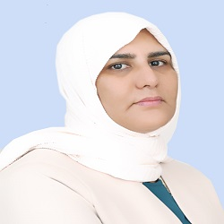

About Me
Let me tell you a few things...

Bienvenue sur mon portfolio !
Je m’appelle Zakia, je suis anciennement diplômée d’un technicien comptaple et d’un technicien en secretariat et bureutique.
J'ai souhaité me réorienter dans un domaine qui me plait davantage.
C’est pourquoi, je me suis intéressée de plus près à ce que je voulais réellement, à mes réelles passions, et j'en ai
découvert une : le développement web !
Aujourd’hui, je suis très motivée et je suis actuellement en formation de développeur web junior chez Youcode.
Vous découvrirez dans ce portfolio, mes compétences, mon parcours ainsi que les projets que j'ai pu réaliser.
Si vous avez des questions, n'hésitez pas à me contacter..